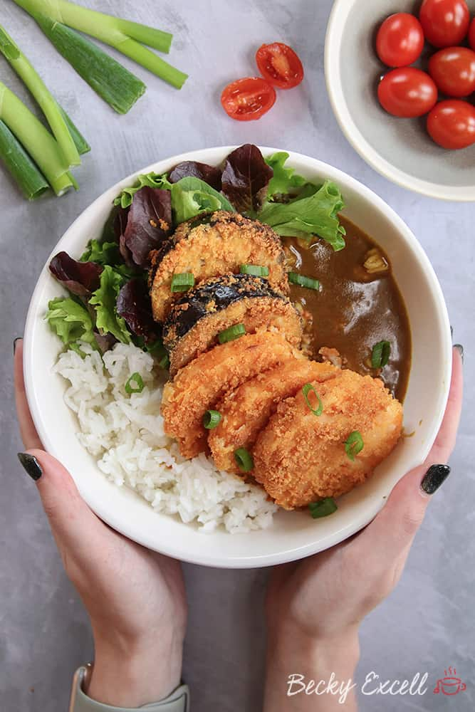

Homepage
Delicious Veggie Pumpkin Katsu Curry
Preparation time
30 minutes - 1 hour
Cooking time
Less than 30 minutes

You will need!
For the pumpkin katsu..
- 6 slices Butternut Squash
- 250ml milk (of your choice)
- 250g Flour
- 250g Panko Bread
- 2 tbsp Vegetable Oil
For the curry
- 2 tbsp Vegetable Oil
- One finely chopped onion
- 4-5 Garlic Cloves
- 1 inch Ginger
- 1 Carrot
- 2 tbsp Flour
- 2 tbsp Curry Powder
- 1/2 tbsp Tumeric Powder
- 350g Vegetable Stock
- 150g Coconut Milk
- 2 tbsp Brown Sugar
- 1 tbsp Soy Sauce
- Salt
- 1 Lime
Method
- 2Preheat oven to 200C (180C fan) mark 6 and line a baking sheet with baking parchment. Peel the squash neck and slice evenly into 4 slices lengthways, about 2cm thick. Brush both sides of each slice with oil and arrange in a single layer on the lined sheet. Season.
- Roast the slices for 20-25min, or until just tender, you want them to still hold their shape. Cool completely.
- Meanwhile, make the pickle. Heat vinegar, sugar, 75ml water and a pinch of fine salt in a small pan, stirring until dissolved. Put radishes and chilli, if using, in a small bowl, pour over the pickle liquid and set aside to cool.
- For the sauce, heat oil in a medium pan over low-medium heat and fry onion for 7-8min, until softened. Add ginger and garlic and cook for 1min, then stir in curry powder, flour and tomato puree. Cook for 1min, then gradually whisk in stock and coconut milk. Add soy sauce and sugar. Bring to the boil, whisking, then simmer for 10-15min, until thickened. Blitz with a stick blender (or in a blender) until smooth. Return to pan, if needed.
- Put breadcrumbs in a shallow bowl. Pat the cooled butternut squash slices dry with kitchen paper, then brush on both sides with mayonnaise. Press into the breadcrumbs to coat well. Heat a thin layer of oil in a large, non-stick frying pan over medium-high heat. Fry the butternut slices for 4-5min per side, or until golden, turning carefully with a fish slice. Drain briefly on kitchen paper.
- Arrange salad on 4 plates and drizzle over some of the pickling liquid, then top with the drained pickles. Reheat the curry sauce, if needed, and spoon on to the plates. Top with the sliced butternut katsu. Serve with sticky rice and a squeeze of vegan mayonnaise on top of the katsu, if you like.